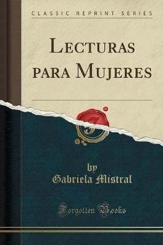

Desolación (1922). Nueva York: Instituto de las Españas en los Estados Unidos. Lecturas para mujeres. Destinadas a la enseñanza del lenguaje (1923), con prólogo de Palma Guillén. México: Departamento Editorial de la Secretaría de Educación de México. 1º edición en Chile, abril de 2018, Editorial Planeta Sostenible. Ternura. Canciones de niños: rondas, canciones de la tierra, estaciones, religiosas, otras canciones de cuna (1923). Madrid: Saturnino Calleja. Nubes blancas: poesías, y La oración de la maestra (1930). Barcelona: B. Bauza. Tala (1938). Buenos Aires: Editorial Sur. Antología (1941), selección de la autora. Santiago: Editorial Zig-Zag. Los sonetos de la muerte y otros poemas elegíacos (1952). Santiago: Philobiblion. Lagar (1954). Santiago: Editorial del Pacífico. Recados, contando a Chile (1957). Santiago: Editorial del Pacífico
Ecos (Jueves 23 de marzo de 1905) Vicuña: La Voz del Elqui, N° 894 Página de mi alma, dedicada a mi madre (Jueves 20 de abril de 1905) Vicuña: La Voz del Elqui, N° 902 De mis tristezas, para mi hermana (Jueves 13 de julio de 1905) Vicuña: La Voz del Elqui, N° 925 Flores negras, para el album de Lolo (Jueves 10 de agosto de 1905) Vicuña: La Voz del Elqui, N° 934 Ensoñaciones (Domingo 1 de octubre de 1905) Vicuña: La Voz del Elqui, N° 947 Voces (Jueves 9 de julio de 1905) Vicuña: La Voz del Elqui, N° 958